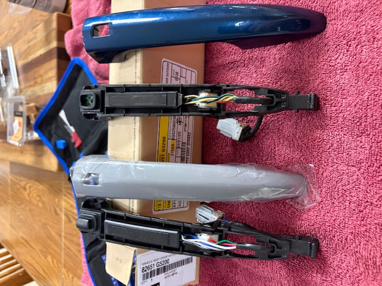

Inspection of the Parts
You should always do an inspection of your vehicle before deciding to do maintenance or repairs.
This is important because you want to make sure that you are not missing any other issues that may
be related to the one you are trying to fix. For example, if you have a broken outer door handle,
you want to make sure that the inner door handle is not also broken and that the door lock is not
also broken. You also want to make sure that the issue is actually with the door handle and not
with the door latch or the door lock.
It is best to know as much as possible about why the part failed so you can better understand
whether it was due to wear and tear or something else. In my case, the rubber button had broken
loose and fallen off, which caused the mechanism to stop working. This is a common issue with
this type of part. Knowing this, I was able to purchase the correct part from the dealership and
complete the repair myself. This saved me a lot of time and money because I did not have to take
my car to a mechanic and pay for a diagnostic fee and then pay for the repair.
